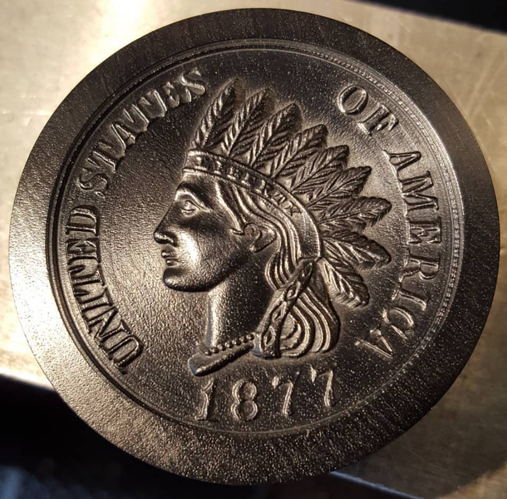
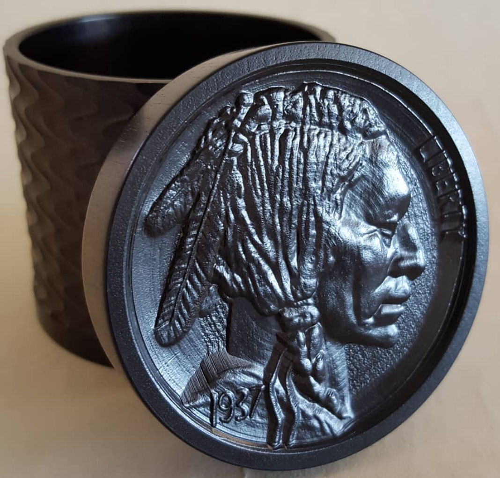

|
|

|
Medallion Engine |
A Medallion Engine is used to carve a pre-defined image into a different piece. At the U.S. Mint, this process is used to take an artist's design, and make a master die. That master die is then used for coin making.
Al Collins developed a Medallion Engine for the MADE Ornamental Rose Engine Lathe which can be used to take a design, and copy it onto wood. Two very fine examples of the work are below.
|

Indian Head Cent African Blackwood |

Indian Head Nickel African Blackwood |
These are beautiful pieces in and of themselves, but the machine Al made to make these is equally amazing. It is a beautiful addition to a machine that is already amazing! Al described how it works below:
The upper left arm has an adjustable spring to activate the arms. There are 2 separate screws with a gear on each to activate the slides. There are 2 chucks, for the stylus and cutter, that are adjustable for amplitude. The gears are changeable to reduce or increase the speed of travel of the slide plates.This change in ratio typically reduces the size of the work in relation to the pattern. There are gears for 1:1 (same size), 1/3 reduction, and 1/2 reduction. If the gears are reversed, it increases the size of the work with the same ratios.
The gears on the headstock plate are arranged so that the 2 spindles rotate counter-clockwise at the same rate of speed. The drive shaft goes thru the sliderest and receives a worm (lower right).
The drive shaft and worm engages the worm wheel which in turn activates the bevel gears on the back shaft. The bevel gear on the back shaft is disengaged for set up. Once the set up is completed and depth of cut achieved, the bevel gear is engaged with the other bevel gear which sets the slides in motion. With the worm gear on the left of the worm, the slides travel left to right (my preference). If I put the worm gear on the right, the slides travel right to left.